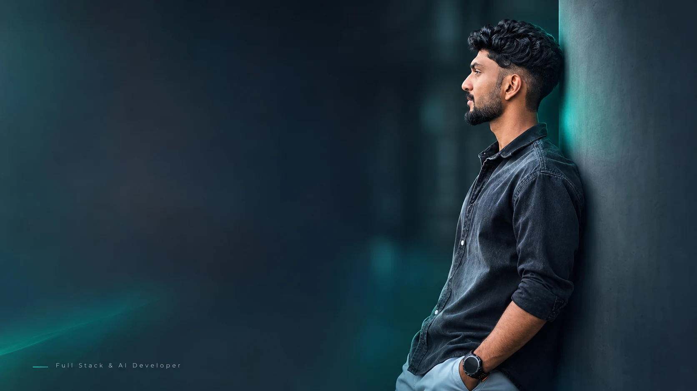
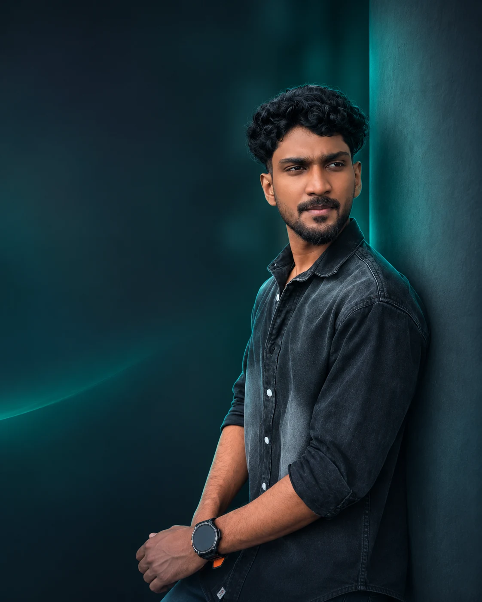
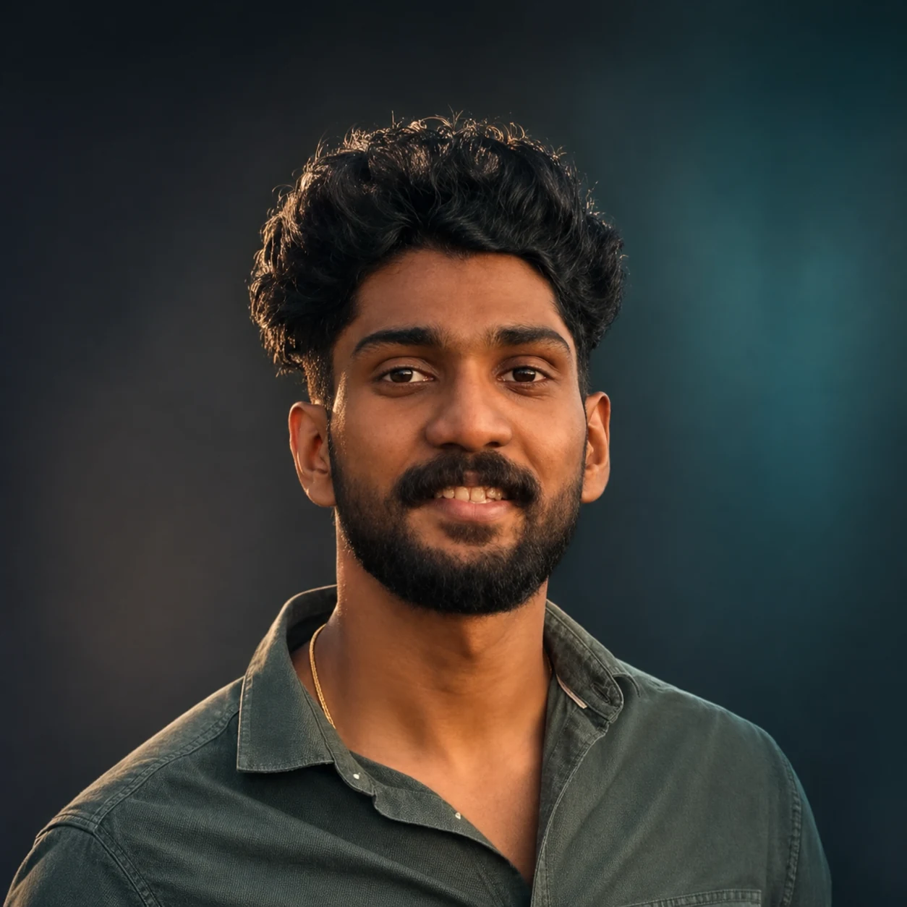

Full-stack engineering
Building end-to-end web applications—from thoughtful interactions to secure data models and REST APIs.
HTML · CSS · JavaScript · React · Django
FULL STACK & AI DEVELOPER KERALA, INDIA
I'm Aswin R Sudhakar. I turn complex workflows into intuitive web products, robust Django systems, and practical AI solutions.
Full-stack development
✳Backend architecture
✳Applied AI & automation
✳Technical training
01 / SELECTED WORK
A selection of products, platforms and prototypes—explained through the decisions behind them, not just feature lists.
All projects ↗02 / MY PRACTICE
My focus is the bridge between useful interfaces, dependable systems, and decisions grounded in real workflows.
Building end-to-end web applications—from thoughtful interactions to secure data models and REST APIs.
HTML · CSS · JavaScript · React · DjangoRole-based access, academic workflows, scheduling constraints, automated tests, and reliable CRUD operations.
Python · DRF · SQL · TestingPractical ML experiments and automation that support people and make repeatable processes easier to manage.
Pandas · scikit-learn · Streamlit
03 / A LITTLE ABOUT ME
I'm a full-stack and AI developer with a strong foundation in Python and Django. I work on systems for education, operations, and decision-support tools—and I enjoy simplifying hard problems.
Beyond development, I train aspiring developers and facilitate faculty development programmes on practical AI in education.
More about me ↗A DIFFERENT PERSPECTIVE
Good products begin with understanding the problem from every angle.
04 / WRITING & UPDATES
Ideas from building products, lessons from the classroom, and the occasional workshop story.
Visit the journal ↗05 / GET IN TOUCH
For software collaborations, full-stack opportunities, or practical technical training—I'd be glad to hear from you.
aswinsudhan0004@gmail.com ↗